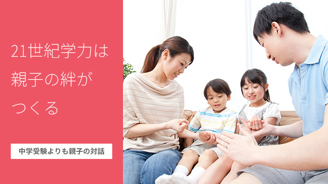

先日私のブログの読者の方から「公立中高一貫についてはどう思うか。子どもが希望しているが受験させてもよいか」というご質問をいただきました。
実はこういう問い合わせは多いので、ここで私の考えを述べてみたいと思います。
いきなり結論を言うと「どちらでもよい」となります。
なぜかというと長い人生を考えた場合、中学で私立へ行ったとか公立へ行った、受験したかどうかということはあまり大きな意味がないと思っているからです。
かんじんなことは、どんな人生を送ったかでありどんな学校を出たかではないからです。
社会に出てからの方が重要です。果たして本当に自分の持っている能力を十分に発揮して充実した人生を送ったのか。それはすなわち自分の向いている職業分野などを見い出し、そこで人々と協力し合いながら、世のため人のために価値ある仕事をやりとげたか。
そこに喜びや幸せを感じて生き抜いたか。
それこそが問われるべきだと思っているからです。
そもそも「中学受験」を子どもにさせる親の多くは、中学受験しないと良い学校へ行けない。あるいは名門校に行ける可能性が広がると考えているわけで、つまりは今後も学歴社会が続くと思っているのです。
要するに意識している、していないにせよ、良い学校→有名大学→良い会社（役所）がエリートコースで、その道を歩むことが無難な人生ということを何となく前提と考えているのだと思います。
読者の方が言うように「近隣の地域は教育熱心な人が多く90％が中学受験をさせる…」とあるように、教育熱心であるイコール中学受験という図式がすでに前提となっています。
これは裏を返せば「中学受験をしない＝教育に不熱心」ということになるわけで、我が子に中学受験をさせないと「自分は子どもの教育に熱心じゃない親だ」というレッテルを貼られるような罪悪感、後ろめたさを感じる構造になっていると考えられます。
だから小学生を持つ親は皆悩むのですね。
小6になるとクラスの半数以上が中学受験することが判明し「えーっ、ウチの子だけなの！！受験しないの」などと慌てて相談に来たりします。
大学受験はどう変わるか
「周りが受験するからウチも受験する」は、もっとも愚かな動機なので止めた方がよいでしょう。ただ、子どもが受験したいと言い親もよく調べた上で「ウチの子にはこの学校が向いている。ぜひ行かせたい」と熟慮した結果であれば良いと思います。
そこは家庭ごとの価値観なので他者がアレコレ口をはさむことではないと思います。
ただし次のことは知っておいていただきたい。
2020年から大学入試が変わります。2018年からは学校の指導要領（カリキュラム）も大幅に変更されることが決まっています。
これまでブログでも書きましたが（＝ココ）この改革は日本の教育の概念が根底からくつがえるほどの大きなものとなります。
たとえば今後大学の入試問題はどのようになるでしょうか。
参考にあげると…（以下「2020年の大学入試問題」石川一郎著より引用）
「木を描くとします。その木は現実のものですか？」
「火星人に人間をどう説明しますか？」
「カタツムリには意識はあるでしょうか？」
上記引用の最初の2つは英国ケンブリッジ大学の口頭試問の問題。3つめは同オックスフォード大学の口頭試問。
これらはシンプルでありながら「現実とは何か？」「人間とは何か？」「意識とは何か？」きわめて本質的な問いであると同時に、正解は1つとは限らないという点です。
つまり、従来のように「教わったもの」を覚えることが勉強という考え方から「多様な視点や発想」そして表現力を問うもの、すなわち「いかに思考してきたか」そのプロセスこそが重要という考えへの転換です。
このような問いに答えるには、今までのように「習ったことを覚える」という知識集積型の勉強では対応できません。
2020年以降このような問題が予想されるのです。
現に東京大学でも次のような問題が出されています。
《今日の社会状況は、しばしば「グローバリゼーション」の進展という観点から議論される。この「グローバリゼーション」に関して、次の二つの問いに答えなさい。１ 種子島へのボルトガル船の漂着にもつながった大航海時代も、あるいはイギリス産業革命が起点となって市場経済の波が世界各地に及び、アヘン戦争や黒船来航（幕末開港）をもたらした時代も、ある意味では「グローバリゼーション」が発展した時代だと考えられる。今日の「グローバリゼーション」と、それらの時代の「グローバリゼーション」との間には、どのような共通点や相違点があるのであろうか。考えるところを述べなさい。
ただし、今日と対比する時代は上記二つの時代のうちどちらかひとつでも良い。２ 今日の「グローバリゼーション」は、あなたの生まれた国（あるいは暮らした国）と日本ではその意味や性質が同じなのであろうか、それとも異なるのであろうか。考えるところを述べなさい。》
（2013年度東京大学外国学校卒業生特別選考小論文）（同書 82～83ページ引用）
中学受験よりも親子の対話
以上長々と引用しましたが、一読して単なる暗記型の勉強で答えられるものではないことが分かるのではないでしょうか。
どうして今このように求められる学力が変わったかというと、これまた以前の記事（＝ココ）にも書きましたが、正解の見えない時代を迎えるにあたって自力で問題を発見し解決する人間。真に主体性ある自立した人間の養成が急務であるからに他なりません。
日本は明治維新以来、近代化を進め先進国に追いつくためにシャニムニ「新知識の獲得」にいそしんで来ました。知識をつめこむことが教育でありその場所が学校であったわけです。
しかし今や時代は変わりました。
いま求められる人間は量的に知識を覚えるタイプの人間ではない。そのような受け身の秀才はある意味不要になったということです。
もっとハッキリ言うと、有名校→東大という偏差値秀才は通用しない社会になったのです。
だから我が子を中学受験させれば良い学校に受かるというのは錯覚であり、まして社会人として成功するなどは幻想といってよいでしょう。行った学校で人生が決まるのではない。小学校から高校までの時点でどのような思考のレッスンをやってきたかがポイントになるのです。
そういう意味では学校に頼るのではなく、家庭の教育力の比重のほうが高まったと考えるべきでしょう。
そして我々教育関係者が気になるのは、一部私立中高や公立とりわけ都立の中高一貫校などがかえって「詰め込み勉強」に走っているように見える点です。
これらの学校は確かに大学合格実績を伸ばしてはいるのですが、今後は厳しくなると予想しています。
なぜなら「詰め込み教育」を行っている時点で、つまり子どもたちを受け身にするという意味で時代に逆行しているし、先の大学入試問題（予想）に対応できるとはまったく思えないからです。
さて、そろそろ話を元に戻します。
今の時代、中学受験をするかしないかは「自立した人間」の育成という観点からは些細な事象に過ぎず、私的にはどうでも良い問題に思えます。
「将来有利になるだろう」という学歴社会を前提とした計算ずくの発想なら、それは期待外れになるだろうことはハッキリ言えますが。
どうしても中学受験したいのなら、むしろ学力向上は考えず「建学の理念」や「教育内容（勉強以外の活動がどれだけ充実しているか）」などに着目した上で、我が子の性格に合っているかどうかを慎重に見極めてからにして欲しいと思います。
要するにその学校が特別「気に入った！！」という出会いの喜びを感じるかどうかですね。
間違っても「中学受験させないと親が教育に不熱心と思われそうだから」などと、自立心のない考えで大切な我が子を受験に駆り立てることのないようにしましょう。
いま 親がやるべきこと。
それは子どもに中学受験させるかどうかで悩むことではなく、たとえば一家団欒のときや何気ない会話の中で、ニュースや身の回りの出来事、現象に対して「これはどう思うか？」とか「皆はそう言ってるけど違う見方はできない？」など物事の多様性や多角的な見方に気づかせること。
そのような日常的対話を通して自ずと子どもが、様々な事象に興味を抱き「面白そうだからちょっと調べ（考え）てみよう」と行動を起こす。
それこそがこれからの大学受験にも通用するし、さらに真理を探求する（学び続ける）姿勢の土台を子どもに与えることになるでしょう。
21世紀型の学力が必要とさる今。
むしろ親こそがバックアップできる場面であり子どもとの絆も深まるチャンスではないでしょうか。
学校に全てを頼る時代の終焉です。